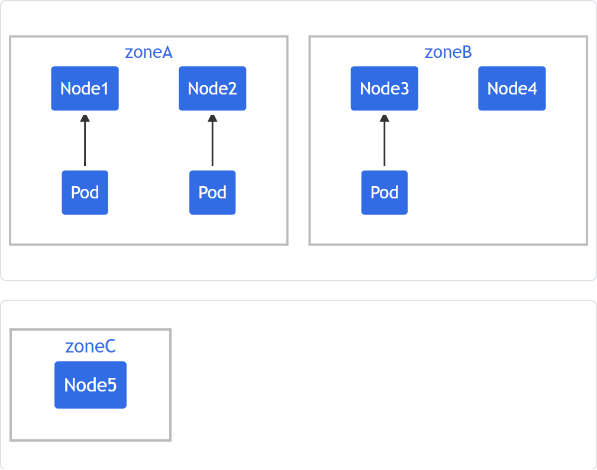
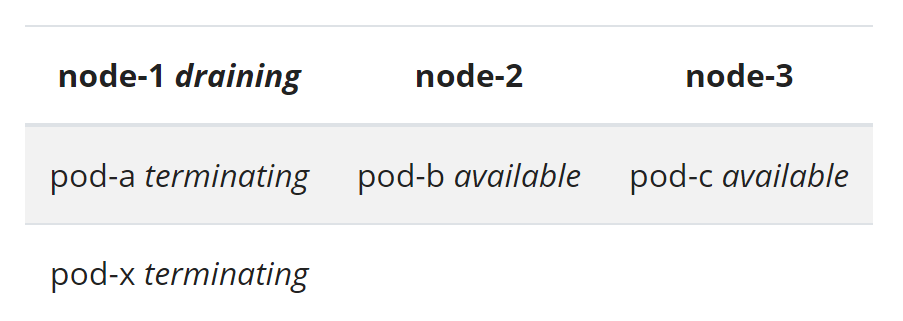
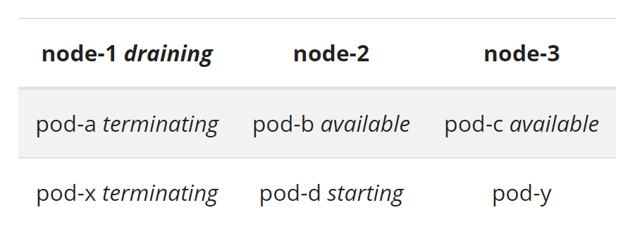
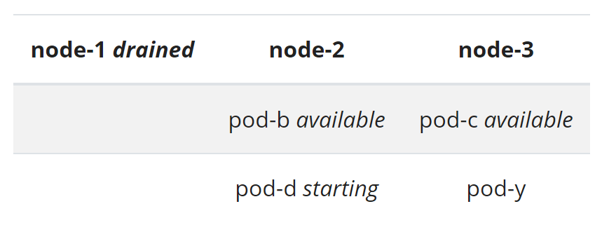
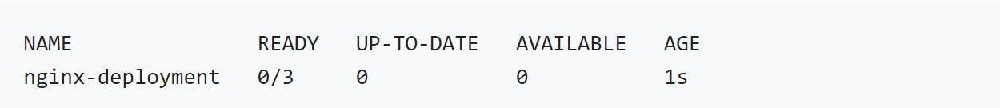

Software Engineering
Kubernetes
- 1. Kubernetes API
- 2. Pods
- 3. Pod Lifecycle
- 4. Init Containers
- 5. Pod Topology Spread Constraints
- 6. Disruptions
- 7. Multi-container pod design
- 8. Deployments
- 9. ReplicaSet
- 10. StatefulSet
- 11. Job
- 12. Cron Job
- 13. Labels, Selectors, and Annotations
- 14. Volumes
- 15. Persistent Volumes
- 16. Volume Snapshots
- 17. Dynamic Volume Provisioning
1. Kubernetes API
Standard API terminology
Most K8s resource types are objects, which have unique name to allow idempotent creation (virtual types may not have unique name, for example "permission check")
- Resource type - name used in the URLs (pods, namespaces, services)
- Kind - JSON representation of resource types
- Collection - list of instances of a resource type
- Resource - single instance of the resource type
All resource types are either cluster-scoped or namespace-scoped. namespace-scoped resource types will be deleted when the namespace is deleted
cluster-scoped
- GET /apis/GROUP/VERSION/RESOURCETYPE
- GET /apis/GROUP/VERSION/RESOURCETYPE/NAME
namespace-scoped
- GET /apis/GROUP/VERSION/namespaces/NAMESPACE/RESOURCETYPE
- GET /apis/GROUP/VERSION/namespaces/NAMESPACE/RESOURCETYPE/NAME
- GET /apis/GROUP/VERSION/namespaces/NAMESPACE/RESOURCETYPE/NAME
A namespace is a cluster-scoped resource type. Retrive all namespaces with "GET /api/v1/namespaces" and particular namespace with "GET /api/v1/namespaces/NAME"
K8s uses "list" to return a collection of resource and "get" to return a single resource
Some resources have sub-resource(s)
- GET /apis/GROUP/VERSION/RESOURCETYPE/NAME/SUBRESOURCE
- GET /apis/GROUP/VERSION/namespaces/NAMESPACE/RESOURCETYPE/NAME/SUBRESOURCE
Efficient detection of changes
watch - detects incremental changes in cluster state. Use "resourceVersion" to store the state of resources
- GET /api/v1/namespaces/test/pods - list all pods in given namespace
- GET /api/v1/namespaces/test/pods?watch=1&resourceVersion=10245 - starting resource version 10245, receive notifications for create/delete/update as JSON
K8s server can only store history for a limted time. Clusters using etcd3 preserve changes for the last 5 mins by default. Clients are expected to handle http status code "410 Gone"
bookmarks - marks that all changes up to given "resourceVersion" has already been sent. (in an attempt to mitigate the short history window problem)
- GET /api/v1/namespaces/test/pods?watch=1&resourceVersion=10245&allowWatchBookmarks=true
Retrieving large results sets in chunks
Break single large collection requests into small chunks by parameters "limit" and "continue"
- GET /api/v1/pods?limit=500 - retrive all pods in cluster, up to 500
- GET /api/v1/pods?limit=500&continue=ENCODED_CONTINUE_TOKEN - continue from the previous call to get 501-1000 pods
- GET /api/v1/pods?limit=500&continue=ENCODED_CONTINUE_TOKEN_2 - continue from the previous call to get last set of pods
Receiving resources as Tables
- GET /api/v1/pods
Accept: application/json;as=Table;g=meta.k8s.io;v=v1beta1
- retrive all pods in cluster in table format
Because there are resource types that don't support Table response, client should handle both Table/non-Table case by using content-type
- Accept: application/json;as=Table;g=meta.k8s.io;v=v1beta1, application/json
Receiving resources as Protobuf
This is for better performance at scale
- GET /api/v1/pods
Accept: application/vnd.kubernetes.protobuf
- retrive all pods in cluster in Protobuf format - POST /api/v1/namespaces/test/pods Content-Type: application/vnd.kubernetes.protobuf Accept: application/json - create a pod with Protobuf encoded data, but receive response in JSON
Similar to Table response, multiple content-types are needed in the "Accept" header to support resource types that don't have Protobuf support
- Accept: application/vnd.kubernetes.protobuf, application/json
Resource deletion
Takes place in two phases 1. finalization 2. removal. Finalizers are removed in any order. Once the last finalizer is removed, the resource is removed from etcd.
Dry-run
dry-run executes the request up until persisting objects in storage. The reponse body should be as close as possible to the actual run. Authorization of dry and non-dry runs are identical
- POST /api/v1/namespaces/test/pods?dryRun=All
Content-Type: application/json
Accept: application/json
- ALL: every stage runs normal except the final stage of persisting objects in storage
2. Pods
Its the smallest deployable unit
- Can contain an init container tha runs during Pod startup
- Similar to Docker containers with shared namespace and volumn
- Pod gets created by resources such as Deployment, Job, or StatefulSet
- Controller for those resources handles Pod replication, rollout, and failure
- Controllers create Pod from Pod Template
apiVersion: batch/v1
kind: Job
metadata:
name: hello
spec:
template:
# This is the pod template
spec:
containers:
- name: hello
image: busybox
command: ['sh', '-c', 'echo "Hello, Kubernetes!" && sleep 3600']
restartPolicy: OnFailure
# The pod template ends here3. Pod Lifecycle
- Pods are created, assinged a unique ID (UUID), and scheduled to nodes. They can never be rescheduled to different nodes
Pod lifecycle
- Pending - containers have not been setup yet
- Running - Pod is bounded to a node. Containers are created but still running
- Succeeded - Containers are terminated with success
- Failed - At least one container is terminated with failure
- Unknown - Pod status cannot be obtained. Most often error communicating with the node
Container lifecycle
- Waiting - running operations to complete startup
- Running - executing without issues
- Terminated - either ran to completion or failed
Container restart policy
specof Pod hasrestartPolicy, which has Always, OnFailure, Never. Default is Always
Pod condition
- PodScheduled - Pod is scheduled to a node
- ContainersReady - all containers in Pod are ready
- Initialized - all init containers are started
- Ready - Pod can serve requests
Pod readiness
specof Pod hasreadinessGates, that allows additional conditions to be specified
kind: Pod
...
spec:
readinessGates:
- conditionType: "www.example.com/feature-1"
status:
conditions:
- type: Ready # a built in PodCondition
status: "False"
lastProbeTime: null
lastTransitionTime: 2018-01-01T00:00:00Z
- type: "www.example.com/feature-1" # an extra PodCondition
status: "False"
lastProbeTime: null
lastTransitionTime: 2018-01-01T00:00:00Z
containerStatuses:
- containerID: docker://abcd...
ready: true
...Container probe
- Kubelet performs diagnostic on a container periodically (this is call Probe)
- Kubelet calls Handler, which is implemented by the container
- ExecAction Handler - executes a command inside container. Diagnostic successful if command exits with 0
- TCPSocketAction Handler - TCP check on IP address on specified port. Diagnostic successful if port is open
- HTTPGetAction Handler - HTTP GET check on IP address on specified port and path. Diagnostic successful if 200 ≤ response < 400
livenessProbe
- Indicates whether the container is running. If liveenss probe fails, the kubelet kills the container, and container is subject to its restart policy
readinessProbe
- Indicates whether the container is ready to respond to requests. If readiness probe fails, then endpoint controller removes Pod IP address from Service endpoints that match the Pod
- Used when container needs to load large data, configuration files
startupProbe
- Indicates whether the application within the container has started. If starup probe fails, the kubelet kills the container, and container is subject to its restart policy
- Used when containers take long time to come into service
Pod Termination
- Kubelet tool to delete Pod, with default graceful period of 30 seconds
- Control plane removes shutting-down Pods from Endpoints
- Resources no longer trest shutting-down Pods valid
- When the grace period expires, kubelet triggeres forcible shutdown (contrainer runtime sends SIGKILL to any running processes in containers)
- API server deletes Pod's object
4. Init Containers
Specialized containers that run before app containers in Pod
- Init containers always run to completion
- Each init container must succeed before next one can run
- If init container fails, kubelet repeatly restarts the container
- Init containers do not support lifecycle, livenessProbe, readinessProbe, startupProbe because they must run to completion before Pod can be ready
- Init containers can have custom code and no need to use FROM
- Init containers can be given access to Secret (unlike app containers)
- If Pod restarts, all init containers must run again
- Init container code must be idempotent (because they can be re-run)
apiVersion: v1
kind: Pod
metadata:
name: myapp-pod
labels:
app: myapp
spec:
containers:
- name: myapp-container
image: busybox:1.28
command: ['sh', '-c', 'echo The app is running! && sleep 3600']
initContainers:
- name: init-myservice
image: busybox:1.28
command: ['sh', '-c', "until nslookup myservice.$(cat /var/run/secrets/kubernetes.io/serviceaccount/namespace).svc.cluster.local; do echo waiting for myservice; sleep 2; done"]
- name: init-mydb
image: busybox:1.28
command: ['sh', '-c', "until nslookup mydb.$(cat /var/run/secrets/kubernetes.io/serviceaccount/namespace).svc.cluster.local; do echo waiting for mydb; sleep 2; done"]Init containters would be waiting to discover Services named myservice and mydb.
---
apiVersion: v1
kind: Service
metadata:
name: myservice
spec:
ports:
- protocol: TCP
port: 80
targetPort: 9376
---
apiVersion: v1
kind: Service
metadata:
name: mydb
spec:
ports:
- protocol: TCP
port: 80
targetPort: 93775. Pod Topology Spread Constraints

kind: Pod
apiVersion: v1
metadata:
name: mypod
labels:
foo: bar
spec:
topologySpreadConstraints:
- maxSkew: 1
topologyKey: zone
whenUnsatisfiable: DoNotSchedule
labelSelector:
matchLabels:
foo: bar
containers:
- name: pause
image: k8s.gcr.io/pause:3.1If a new Pod goes to Zone A, then the skew will be 3-1=2, which will exceed the maxSkew of 1. Thus, it can only go to Zone B such that


kind: Pod
apiVersion: v1
metadata:
name: mypod
labels:
foo: bar
spec:
topologySpreadConstraints:
- maxSkew: 1
topologyKey: zone
whenUnsatisfiable: DoNotSchedule
labelSelector:
matchLabels:
foo: bar
- maxSkew: 1
topologyKey: node
whenUnsatisfiable: DoNotSchedule
labelSelector:
matchLabels:
foo: bar
containers:
- name: pause
image: k8s.gcr.io/pause:3.1A new Pod can only go to Zone B to meet the maxSkew of 1 in the first constraint. However at the same time, it can only go to Node 2 to meet the maxSkew of 1 in the second constraint. Because whenUnsatisfiable is DoNotSchedule in both constraints, new Pod cannot be scheduled. (it would be scheduled if whenUnsatisfiable is ScheduleAnyway)
kind: Pod
apiVersion: v1
metadata:
name: mypod
labels:
foo: bar
spec:
topologySpreadConstraints:
- maxSkew: 1
topologyKey: zone
whenUnsatisfiable: DoNotSchedule
labelSelector:
matchLabels:
foo: bar
affinity:
nodeAffinity:
requiredDuringSchedulingIgnoredDuringExecution:
nodeSelectorTerms:
- matchExpressions:
- key: zone
operator: NotIn
values:
- zoneC
containers:
- name: pause
image: k8s.gcr.io/pause:3.1This will exclude Zone C from the constraint such that a new Pod goes to Zone B rather than Zone C
Cluster-Level Default Constraints
apiVersion: kubescheduler.config.k8s.io/v1beta1
kind: KubeSchedulerConfiguration
profiles:
- pluginConfig:
- name: PodTopologySpread
args:
defaultConstraints:
- maxSkew: 1
topologyKey: topology.kubernetes.io/zone
whenUnsatisfiable: ScheduleAnyway
defaultingType: List
- Pod Affinity - can place any number of Pods into qualifying topology domains
- Pod Anti-Affinity - can only place one Pod into a single topology domain
apiVersion: kubescheduler.config.k8s.io/v1beta1
kind: KubeSchedulerConfiguration
profiles:
- pluginConfig:
- name: PodTopologySpread
args:
defaultConstraints:
- maxSkew: 1
topologyKey: topology.kubernetes.io/zone
whenUnsatisfiable: ScheduleAnyway
defaultingType: List6. Disruptions
There are involuntary disruptions
- Hardware failure
- Kernal panic
- Cloud provider issue
- Network issue
- Pod eviction due to Node having out of resource
There are voluntary disruptions. Application owners can
- Delete the Deployment
- Update the Deployment, causing a restart
- Directly delete Pods by accident
Cluster admins can
- Drain a Node for repair or scale down
- Remove a Pod from a Node to fit in something else
Pod description budgets (PDB)
- Limits the number of Pods down simultaneously from voluntary disruptions
Consider the following scenario where Pod-a, Pod-b, Pod-c are subject to PDB (whose requirement is that at least 2 out of 3 Pods must be available) while Pod-x is not

Now the cluster admin drains Node 1, which will cause Pod-a and Pod-x to start terminating
Deployment notices that Pods are terminating, and to reinstate the desired state, it creates replacement Pods (Pod-d and Pod-y)
The cluster admin now attempts to drain Node 2 and Node 3. However, the drain command will block because of PDB
At this point, there are three availabe Pods that are subject to PDB

The cluster admin now attempts to drain Node 2. Either one of Pod-b or Pod-d will be evicted but both cannot be eviced due to PDB. Assuming Pod-b got evicted, the Deployment will create a replacement Pod-e. But since there are not enough resources in Node 2 and 3, the drain will block

7. Multi-container pod design
Each pod can have multiple containers (which would run on the same node). This make communication between containers faster and securer, and allow them to share volumns and file systems
Sidecar
Enhance/extend existing functionality of container
For example, an app container can stream logs to a particular location while the sidecar container mounts the logs to some other directory
apiVersion: v1
kind: Pod
metadata:
name: sidecar-pod
spec:
volumes:
- name: logs
emptyDir: {}
containers:
- name: app-container
image: alpine
command: ["/bin/sh"]
args: ["-c", "while true; do date >> /var/log/app.log; sleep 2;done"]
volumeMounts:
- name: logs
mountPath: /var/log
- name: log-exporter-sidecar
image: nginx
ports:
- containerPort: 80
volumeMounts:
- name: logs
mountPath: /usr/share/nginx/html"app-container" streams logs to /var/log/app.log while "log-exporter-sidecar" mounts those logs into /usr/share/nginx/html
Ambassador
Serves as a proxy to external worlds (this for for legacy apps, ConfigMap should be used for new apps)
For example, when connecting to a DB server and that server config changes across different environments, the ambassador container can act as a TCP proxy to the database, which can be connected via localhost. The sysadmin can use config maps and secrets with the proxy container to inject the correct connection and auth information
apiVersion: v1
kind: Pod
metadata:
name: ambassador-pod
labels:
app: ambassador-app
spec:
volumes:
- name: shared
emptyDir: {}
containers:
- name: app-container-poller
image: yauritux/busybox-curl
command: ["/bin/sh"]
args: ["-c", "while true; do curl 127.0.0.1:81 > /usr/share/nginx/html/index.html; sleep 10; done"]
volumeMounts:
- name: shared
mountPath: /usr/share/nginx/html
- name: app-container-server
image: nginx
ports:
- containerPort: 80
volumeMounts:
- name: shared
mountPath: /usr/share/nginx/html
- name: ambassador-container
image: bharamicrosystems/nginx-forward-proxy
ports:
- containerPort: 81"app-container-poller" call on port 81 and send stuff to /usr/share/nginx/html/index.html. "app-container-server" listens on port 80. These two containers share the same mount point. Lastly, "ambassador-container" listens on port 81, so that when users curl on 80 they get response from html page
Adaptor
Help standarized heterogeneous system
For example, when there are multiple applications running on separate containers that are outputing logs in different formats, the adaptor container can standardize logs
apiVersion: v1
kind: Pod
metadata:
name: adapter-pod
labels:
app: adapter-app
spec:
volumes:
- name: logs
emptyDir: {}
containers:
- name: app-container
image: alpine
command: ["/bin/sh"]
args: ["-c", "while true; do date >> /var/log/app.log; sleep 2;done"]
volumeMounts:
- name: logs
mountPath: /var/log
- name: log-adapter
image: alpine
command: ["/bin/sh"]
args: ["-c", "tail -f /var/log/app.log|sed -e 's/^/Date /' > /var/log/out.log"]
volumeMounts:
- name: logs
mountPath: /var/log"app-container" outputs stream of dates in log file while "log-adapter" appends a word to those stream of dates
8. Deployments
Provides declarative updates for Pods and ReplicaSets. Deployment Controller change actual state to desired state at a controlled rate
Usecase
- Create a Deployment to rollout a ReplicaSet, which creates Pods in the background
- Declare the new state of Pods by updating the PodTemplateSpec of the Deployment
- Rollback to an earlier Deployment version
- Scale up the Deployments
- Clean up old ReplicaSets
Create a Deployment
apiVersion: apps/v1 # Mandatory field
kind: Deployment # Mandatory field
metadata: # Mandatory field
name: nginx-deployment # Deployment named ".metadata.name" is created
labels:
app: nginx
spec:
replicas: 3 # Three replicated Pods. If this field does not exist, it will default to 1
selector: # Required field for "spec". This specifies the label selector of Pod targeted by this Deployment
matchLabels:
app: nginx # How Deployment finds which Pods to manage
template: # Required field for "spec". This is a Pod template, which has the same schema as Pod
metadata:
labels:
app: nginx # Pod label. This must match ".spec.selector"
spec:
containers: # nginx container runs nginx image version 1.14.2
- name: nginx
image: nginx:1.14.2
ports:
- containerPort: 80- To create Deployment
kubectl apply -f nginx-deployment.yaml - To check Deployment
kubectl get deployments

- NAME - names of Deployments in the namespace
- READY - how many replicas of the application are available to users
- UP TO DATE - number of replicas updated to achieve the desired state
- AVAILABLE - how many replicas of the application are available to users
- AGE - amount of time the appliation has been running
- To check Deployment rollout status
kubectl rollout status deployment/nginx-deployment - To see the ReplicaSet created by Deployment
kubectl get rs - NAME - names of ReplicaSets in the namespace
- DESIRED - desired number of replicas in the application
- CURRENT - how many applications are currently running
- READY - how many replicas of the application are available to users
- AGE - amount of time the appliation has been running
- To see the labels generated for each Pod
kubectl get pods --show-labels - To update iamge from nginx:1.14.2 to nginx:1.16.1, run one of the following
kubectl --record deployment.apps/nginx-deployment set image deployment.v1.apps/nginx-deployment nginx=nginx:1.16.1kubectl set image deployment/nginx-deployment nginx=nginx:1.16.1 --record - To see the rollout status
kubectl rollout status deployment/nginx-deployment
Deployment ensures that at least 75% of Pods are up while they are being updated. It also ensures that at most 125% of the desired number of Pods are up
Rollover
- Everytime a new Deployment is observed by Deployment Controller, a ReplicaSet is created to bring up the desired Pods
- If Deployment is updated, the existing ReplicaSet that control Pods whose labels match
.spec.selectorbut whose template does not match.spec.templateare scaled down - Eventually, new ReplicaSet is scaled to
.spec.replicasand all old ReplicaSets is scaled to 0
Rollback
- Check the revisions of Deployment
kubectl rollout history deployment.v1.apps/nginx-deploymentkubectl rollout history deployment.v1.apps/nginx-deployment --revision=2kubectl rollout undo deployment.v1.apps/nginx-deployment --to-revision=2Scaling
- Scale a Deployment
kubectl scale deployment.v1.apps/nginx-deployment --replicas=10kubectl autoscale deployment.v1.apps/nginx-deployment --min=10 --max=15 --cpu-percent=80kubectl rollout undo deployment.v1.apps/nginx-deployment --to-revision=2Proportional scaling
- Deployment Controller balances additional replicas in the existing ReplicaSets
Pause and resume Deployment
- Can apply multiple fixes in between pausing and resuming without triggering unnecessary rollouts
- To pause the Deployment
kubectl rollout pause deployment.v1.apps/nginx-deploymentkubectl set image deployment.v1.apps/nginx-deployment nginx=nginx:1.16.1kubectl set resources deployment.v1.apps/nginx-deployment -c=nginx --limits=cpu=200m,memory=512Mikubectl rollout resume deployment.v1.apps/nginx-deployment9. ReplicaSet
Generally, ReplicaSet should not be manipulated. Rather, Deployment should be used.
ReplicaSet is mapped to Pod by Pod's metadata.ownerReferences field.
apiVersion: apps/v1
kind: ReplicaSet
metadata:
name: frontend
labels:
app: guestbook
tier: frontend
spec:
# modify replicas according to your case
replicas: 3
selector:
matchLabels:
tier: frontend
template:
metadata:
labels:
tier: frontend
spec:
containers:
- name: php-redis
image: gcr.io/google_samples/gb-frontend:v3apiVersion: v1
kind: Pod
metadata:
name: pod1
labels:
tier: frontend
spec:
containers:
- name: hello1
image: gcr.io/google-samples/hello-app:2.0
---
apiVersion: v1
kind: Pod
metadata:
name: pod2
labels:
tier: frontend
spec:
containers:
- name: hello2
image: gcr.io/google-samples/hello-app:1.0These Pods do not have Controller as their owner reference. And they match the selector of frontend ReplicaSet (right above). This means these Pods will be acquired by that ReplicaSet. Moreover, if the frontend ReplicaSet is already deployed, creating these two additional Pods cause them to immediately terminate because the ReplicaSet exceeds the desired count.
Delete ReplicaSet and its Pods.
kubectl proxy --port=8080
curl -X DELETE 'localhost:8080/apis/apps/v1/namespaces/default/replicasets/frontend' \
> -d '{"kind":"DeleteOptions","apiVersion":"v1","propagationPolicy":"Foreground"}' \
> -H "Content-Type: application/json"Delete just a ReplicaSet
kubectl proxy --port=8080
curl -X DELETE 'localhost:8080/apis/apps/v1/namespaces/default/replicasets/frontend' \
> -d '{"kind":"DeleteOptions","apiVersion":"v1","propagationPolicy":"Orphan"}' \
> -H "Content-Type: application/json"Scale-down a ReplicaSet
- Pending Pods are scaled-down first
- If controller.kubernetes.io/pod-deletion-cost annotation is set, Pods with lower value are scaled-down second
- Pods on Nodes with more replicas are scaled-down thrid
- Pods created recently are scaled-down fourth
10. StatefulSet
Similar to Deployment, but guarantees ordering and uniqueness of Pods.
Usecase
- Stable, unique network identifier
- Stable, persistent storage
- Ordered, graceful deployment and scaling
- Ordered, automated rolling updates
Limitations
- Storage for a Pod must be provisioned by PersistentVolumns Provsioner
- Deleting StatefulSet does not delete volumns associated with it
- StatefulSet requires Headless Service for the network identity of the Pods
- StatefulSet does not guarantee on the termination of Pods when Statefulset gets deleted
Example
- Headless service named "nginx" is used to control the network domain
- 3 replicas of nginx container will be launched in unique Pods
- volumeClaimTemplates will provide stable storage using PersistentVolumns
apiVersion: v1
kind: Service
metadata:
name: nginx
labels:
app: nginx
spec:
ports:
- port: 80
name: web
clusterIP: None
selector:
app: nginx
---
apiVersion: apps/v1
kind: StatefulSet
metadata:
name: web
spec:
selector:
matchLabels:
app: nginx # has to match .spec.template.metadata.labels
serviceName: "nginx"
replicas: 3 # by default is 1
template:
metadata:
labels:
app: nginx # has to match .spec.selector.matchLabels
spec:
terminationGracePeriodSeconds: 10
containers:
- name: nginx
image: k8s.gcr.io/nginx-slim:0.8
ports:
- containerPort: 80
name: web
volumeMounts:
- name: www
mountPath: /usr/share/nginx/html
volumeClaimTemplates:
- metadata:
name: www
spec:
accessModes: [ "ReadWriteOnce" ]
storageClassName: "my-storage-class"
resources:
requests:
storage: 1Gi- Three Pods will be deployed in the order web-0, web-1, web-2
- web-1 will not be deployed until web-0 is Running and Ready
- When scaling down, web-1 will not be terminated until web-2 is fully shutdown
11. Jobs
A Job creates one more more Pods. It reliably runs one Pod to completion. Deleting a Job will clean up Pods it created. Suspending a Job will delete its active Pods
A Job is better than bare Pod because it can automatically replace failed Pod with new one. While Replication Controller manages Pods that are not expected to terminate, Job manages Pods that are expected to terminate
Example
apiVersion: batch/v1
kind: Job
metadata:
name: pi
spec:
template:
spec:
containers:
- name: pi
image: perl
command: ["perl", "-Mbignum=bpi", "-wle", "print bpi(2000)"]
restartPolicy: Never
backoffLimit: 4To list all the Pods that belong to a Job
run pods=$(kubectl get pods --selector=job-name=pi --output=jsonpath='{.items[*].metadata.name}') && echo $pods"Three types of tasks suitable to run as a Job
- Non-parallel Jobs - normally only one Pod is started. Job is complete as soon as its Pod terminates successfully. Can leave both
.spec.completionsand.spec.parallelismunset (they will default to 1) - Parallel Jobs with a fixed completion count - Job is complete when there is one successful Pod for each value in the range 1 to
.spec.completions - Parallel Jobs with a work queue - when any Pod from the Job terminates with success, no new Pods are created. Once at least one Pod is terminated with success and all Pods are terminated, Job succeeds. Must leave
.spec.completionsunset and set.spec.parallelismto a non-negative integer
Requested parallelism .spec.parallelism is set to 1 if not specified. Setting it to 0 makes Job effective paused
- Fixed completion count Jobs - actual number of Pods running in parallel will not exceed the number of remaining completions. Higher value of
.spec.parallelismis ignored - Work queue Jobs - no new Pods are started after any Pod has succeeded
Pod and container failure
- If container fails and
.spec.template.spec.restartPolicy = "OnFailure", Pod stays on the node but container re-runs. You can avoid this by.spec.template.spec.restartPolicy = "Never" - If Pod fails, then Job Controller starts a new Pod
.spec.backoffLimitis specifiy number fo retries before marking Job as failure (default is 6)
Job termination and cleaup
- Delete the Job, all the Pods created by that Job are deleted too
- Setting
.spec.activeDeadlineSecondswill make Job fail and terminate all running Pods onceactiveDeadlineSecondsis reached
apiVersion: batch/v1
kind: JobapiVersion: batch/v1
kind: Job
metadata:
name: pi-with-timeout
spec:
backoffLimit: 5
activeDeadlineSeconds: 100
template:
spec:
containers:
- name: pi
image: perl
command: ["perl", "-Mbignum=bpi", "-wle", "print bpi(2000)"]
restartPolicy: Never12. Cron Job
It can create Jobs on a repeating schedule or any individual tasks
Example
apiVersion: batch/v1beta1
kind: CronJob
metadata:
name: hello
spec:
schedule: "*/1 * * * *"
jobTemplate:
spec:
template:
spec:
containers:
- name: hello
image: busybox
imagePullPolicy: IfNotPresent
command:
- /bin/sh
- -c
- date; echo Hello from the Kubernetes cluster
restartPolicy: OnFailure13. Labels, Selectors, and Annotations
Labels - key/value pairs enabling users to map their own structures to system objects (for example, Pods) in loosely coupled fashion. Labels do not need to be unique.
"metadata": {
"labels": {
"key1" : "value1",
"key2" : "value2"
}
}Example, Pods with two labels environment: production and app: nginx
apiVersion: v1
kind: Pod
metadata:
name: label-demo
labels:
environment: production
app: nginx
spec:
containers:
- name: nginx
image: nginx:1.14.2
ports:
- containerPort: 80Selectors - equality-based allows filtering by label keys and values while set-based allows filtering keys according to a set of values. For example,
kubectl get pods -l environment=production,tier=frontend # equality based
kubectl get pods -l 'environment in (production),tier in (frontend)' # set basedService and Replication Controller only support equality-based selector
selector:
component: redisJob, Deployment, ReplicaSet, DaemonSet also support set-based selector
selector:
matchLabels:
component: redis
matchExpressions:
- {key: tier, operator: In, values: [cache]}
- {key: environment, operator: NotIn, values: [dev]}Annotations - allows attaching arbitrary non-identifying metadata to objects (while Labels are used to select objects, annotations are for recording metadata)
apiVersion: v1
kind: Pod
metadata:
name: annotations-demo
annotations:
imageregistry: "https://hub.docker.com/"
spec:
containers:
- name: nginx
image: nginx:1.14.2
ports:
- containerPort: 8014. Volumes
Docker images are the root of filesystem hierarchy. Volumes mount at specific path within the image.
ConfigMap allows injecting configration data into Pods. log-config ConfigMap is mounted as a volume at path /etc/config/log_level with Pod called configmap-pod
apiVersion: v1
kind: Pod
metadata:
name: configmap-pod
spec:
containers:
- name: test
image: busybox
volumeMounts:
- name: config-vol
mountPath: /etc/config
volumes:
- name: config-vol
configMap:
name: log-config
items:
- key: log_level
path: log_levelemptyDir is created when Pod is assigned to Node. When Pod is removed from Node, data is deleted permanently
apiVersion: v1
kind: Pod
metadata:
name: test-pd
spec:
containers:
- image: k8s.gcr.io/test-webserver
name: test-container
volumeMounts:
- mountPath: /cache
name: cache-volume
volumes:
- name: cache-volume
emptyDir: {}15. Persistent Volumes
PersistentVolume (PV) is a piece of storage in a cluster. It is similar to Node. PersistentVolumeClaim (PVC) a request for storage by a user. It is similar to Pod. PVC comsume PV resources. While Pod can request CPU and memory, PVC can request specific size and access mode.
Binding
If PV was dynamically provisioned for a PVC, those PV and PVC will bind together. Otherwise, users will get at least what they asked for but volumes maybe at the excess.
Storage Object in Use Protection
If user deletes PVC, deletion is postponed until PVC is not in use by any Pods. If admin deletes PV, deletion is postponed until PV is not bound to PVC.
Reserving PV
apiVersion: v1
kind: PersistentVolume
metadata:
name: foo-pv
spec:
storageClassName: ""
claimRef:
name: foo-pvc
namespace: foo
...PV
apiVersion: v1
kind: PersistentVolume
metadata:
name: pv0003
spec:
capacity:
storage: 5Gi
volumeMode: Filesystem # Filesystem - default, Block - raw block device
accessModes:
- ReadWriteOnce # ReadWriteOnce, ReadWriteMany, ReadOnlyMany. Once - mounted by single Node, Many - mounted by many Nodes
persistentVolumeReclaimPolicy: Recycle # Retain, Recycle, Delete
storageClassName: slow
mountOptions:
- hard
- nfsvers=4.1
nfs:
path: /tmp
server: 172.17.0.2PVC
apiVersion: v1
kind: PersistentVolumeClaim
metadata:
name: myclaim
spec:
accessModes:
- ReadWriteOnce
volumeMode: Filesystem
resources:
requests:
storage: 8Gi
storageClassName: slow
selector:
matchLabels: # volumn must have a label with this value
release: "stable"
matchExpressions: # a list of requirements
- {key: environment, operator: In, values: [dev]}Claims as Volumns
Pods access storage by using Claim as volume. Claim must exist in the same namespace as Pod. The cluster finds Claim in Pods's namespace and uses it to get PV.
apiVersion: v1
kind: Pod
metadata:
name: mypod
spec:
containers:
- name: myfrontend
image: nginx
volumeMounts:
- mountPath: "/var/www/html"
name: mypd
volumes:
- name: mypd
persistentVolumeClaim:
claimName: myclaim16. Volume Snapshots
VolumeSnapshotContent - snapshot taken from a volumn. VolumeSnapshot - request for a snapshot by a user. VolumeSnapshot is only available for CSI (Container Storage Interface) drivers.
VS
apiVersion: snapshot.storage.k8s.io/v1
kind: VolumeSnapshot
metadata:
name: new-snapshot-test
spec:
volumeSnapshotClassName: csi-hostpath-snapclass
source:
persistentVolumeClaimName: pvc-test # name of PVC data source for the snapshotVSC
apiVersion: snapshot.storage.k8s.io/v1
kind: VolumeSnapshotContent
metadata:
name: snapcontent-72d9a349-aacd-42d2-a240-d775650d2455
spec:
deletionPolicy: Delete
driver: hostpath.csi.k8s.io
source:
volumeHandle: ee0cfb94-f8d4-11e9-b2d8-0242ac110002 # unique identifier creatd on the storage (returned by CSI driver druing volume creation)
volumeSnapshotClassName: csi-hostpath-snapclass
volumeSnapshotRef:
name: new-snapshot-test
namespace: default
uid: 72d9a349-aacd-42d2-a240-d775650d245517. Dynamic Volume Provisioning
To enable dynamic provisioning, cluster admin must pre-create StorageClass object for users.
# Create storage class "slow" that provisions persistent disks like standard disk.
apiVersion: storage.k8s.io/v1
kind: StorageClass
metadata:
name: slow
provisioner: kubernetes.io/gce-pd
parameters:
type: pd-standard # Create storage class "fast" that provisions persistent disks like SSD.
apiVersion: storage.k8s.io/v1
kind: StorageClass
metadata:
name: fast
provisioner: kubernetes.io/gce-pd
parameters:
type: pd-ssdUsers request dynamically provisioned storage by including a storage class in their PersistentVolumeClaim. When this claim is deleted, the volume gets destroyed.
apiVersion: v1
kind: PersistentVolumeClaim
metadata:
name: claim1
spec:
accessModes:
- ReadWriteOnce
storageClassName: fast
resources:
requests:
storage: 30GiCluster admin can make Claims to use dynamic provisioning by default. This is done by marking a specific StorageClass as default by adding storageclass.kubernetes.io/is-default-class annotation to it.